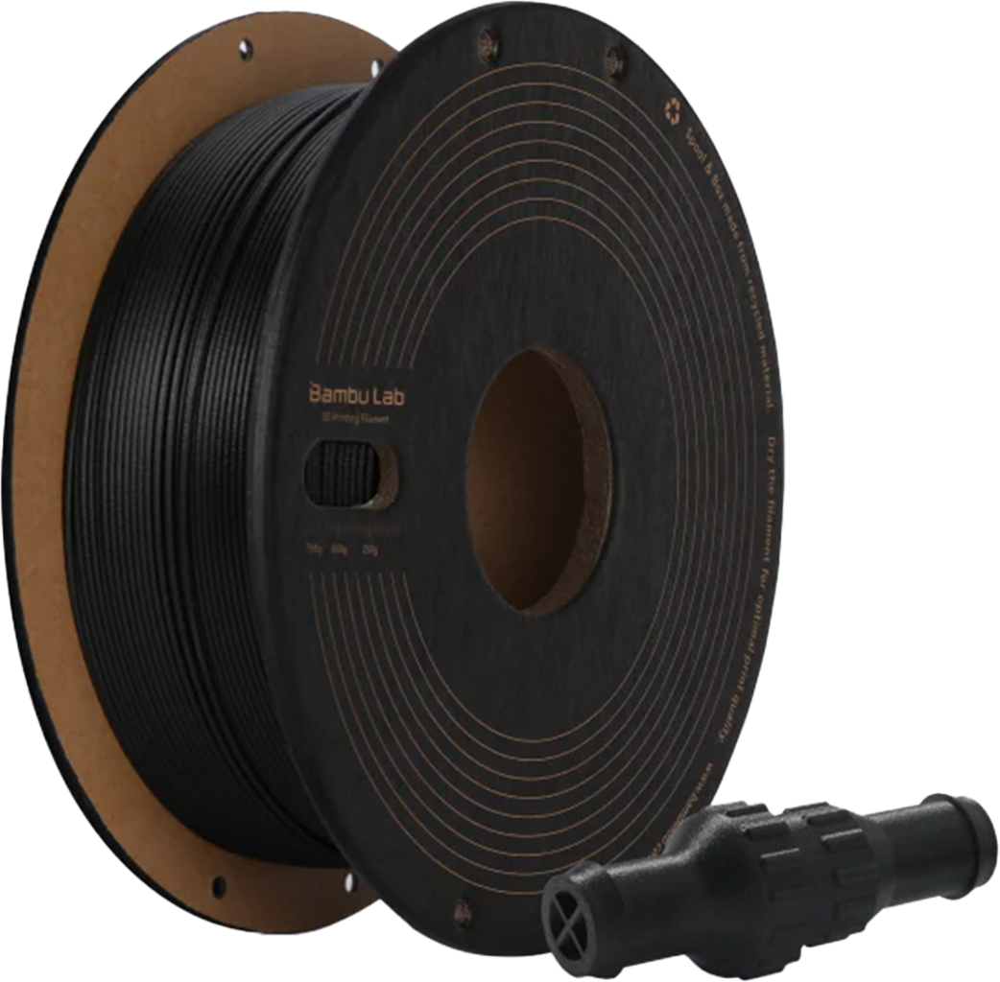

Ici, vous trouverez des informations sur les différents filaments utilisés dans l'impression 3D.
⬇️Ceci est une bobine de filament.⬇️
| Caractéristiques | Solidité | Résistance à la chaleur |
| PLA |
|
Faible (déformation à partir de 60°C) |
| ABS |
|
Élevée (déformation à partir de 100°C) |
| TPU |
|
Moyenne (déformation à partir de 80°C) |